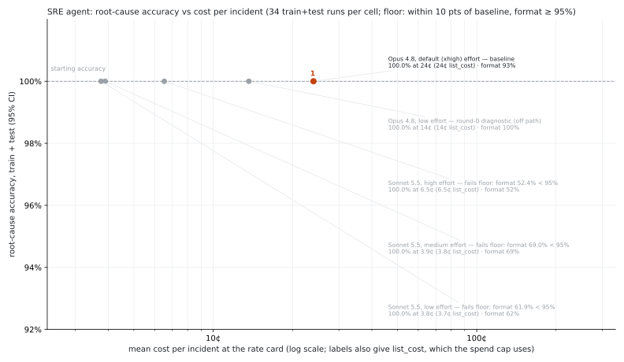

Your SRE agent works.
Now make it cheap.
A follow-on to Ship Your First Managed Agent, Gagan Bhat's Code with Claude workshop.
The whole lab on recorded runs, no API key:
uv run python checkpoint.py all --solution
Finance has a question.
24¢
per incident today: Opus 4.8, default effort. It names a3f9c21 every time.
The question
Would a cheaper model catch the same root causes?
What we have
- one incident
- one test, and it can't tell right from lucky
Two harnesses.
Agent harness. The loop around the model. On Managed Agents, Anthropic runs it.
Eval harness. The ruler. It can't change without an approval, so a score can't rise by editing the grader.
Write the grader.
Did the agent name the right culprit? Write grade_root_cause in lab/grading.py.
uv run python checkpoint.py 1
16/16 fixtures pass. Next: checkpoint 2.
Stuck? --solution runs the reference in lab_complete/.
Catch the old grader out.
Run your grader next to the workshop's only test, on every recorded reply.
uv run python checkpoint.py 2
Nothing new to write. Read the four counts.
The test was too strict.
40
correct answers e2e.py fails, of 289 recorded deploy-case replies. None of them writes “N+1”.
0
wrong answers it passes. That failure exists only as a written fixture.
Right, but no “N+1”
Root cause: 0c1986c — price_cart now runs one SELECT per cart line instead of a single batched IN query…
ladder/v1, dc-cart rep 1
Price a session.
Turn token counts into dollars. Write session_cost in lab/cost.py.
uv run python checkpoint.py 3
Your session_cost matches pricing.py on 407/407 recorded sessions.
Swap the model.
One line in lab/cell.py:
MODEL, EFFORT = "claude-haiku-5-5", "low"
uv run python checkpoint.py 4
Optional, one volunteer with a key: --live runs it for real, about 2¢.

$ uv run python checkpoint.py 5 · read it top to bottom: the floor first, then the costs
What to tell finance.
Deploy this
3.41¢
Sonnet 5.5 low, climbed prompt. 7× cheaper than 24.02¢, and it passes the floor with margin.
Cheapest, not yet
0.42¢
Haiku 5.5 low. 57× cheaper, but a narrow pass: most misses drop the bold label.
- Next: one prompt round aimed at Haiku's bold label, same floor
- Stretch:
/claude-api hillclimb on prompts/system.md
Troubleshooting.
[B] goes back to the slide you were on.
Checkpoint 1: the identifier.
Symptom
Fails “a sha followed by a period”, “'commit' before the sha” or “component in plain words”.
Fix
- Print what your code thinks the identifier is, for the failing fixture.
- The docstring's rules are in the order you'll need them.
- Still stuck at minute 13:
--solution, and read lab_complete/grading.py.
Checkpoint 3: the price is off.
Check, in this order
- Rates are per million tokens.
- Add runtime: $0.08 per hour of active time.
- Only Haiku wrong? Price each request on its own: the long-prompt tier is per request.
Your Opus number should round to the session's list_cost, to the cent.
Imports fail, or --live errors.
- ModuleNotFoundError: run from
ship-your-first-managed-agent/evals/.
- 400 asking for
anthropic-workspace-id: create the API key inside a workspace.
- “No recorded run for this cell”: expected for anything but the six recorded canaries. Run it with
--live, or pick a recorded cell.
The API is slow or down.
Nothing in the core lab needs the API. Every checkpoint replays results/.
--live hangs, or returns 429 / 529: Ctrl-C, then run it without --live.- A room of 30 on
--live trips rate limits. Make it one volunteer's demo.
A broken setup.
- Pair with a neighbour, or follow on the facilitator's screen:
uv run python checkpoint.py all --solution
uv can't reach the network: run uv run pytest once before the session, so the environment is cached.
“Haiku missed a case.”
- Open the miss. Four of the five write a plain
Root cause: without the bold label.
- “Didn't write the line” and “named the wrong commit” need different fixes, so they're scored apart.
- Don't loosen the grader to pass it. The honest fix is a prompt round, measured against the same floor.